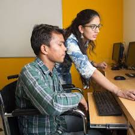

He journey that impacted over 2 million lives started in 1996
when Dr. K. Anji Reddy, a renowned scientist, entrepreneur and
philanthropist, encouraged by the possibilities of helping others
to share and reap the benefits of India’s economic growth, started
Dr.Reddy’s Foundation. The foundation was established with a mission
of assisting disadvantaged people to have access to quality education
and develop skills to keep pace with modern day challenges. After 25
years, the mission has only grown to encompass some of the most
complex social problems of the day but with the same enthusiasm to
change lives.
